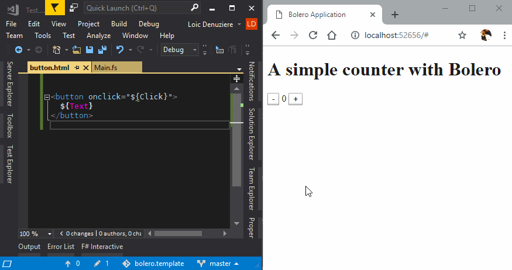

In addition to creating HTML content with F# functions, Bolero enables inserting plain HTML templates in the form of a type provider.
The type provider Bolero.Template takes one static parameter, which is a string and can be either:
A plain HTML string. It is recommended to use triple-quotes to avoid escaping issues:
type Hello = Template<"""<div id="hello">Hello, world!</div>""">
A path to an HTML file, relative to the project root.
type Hello = Template<"hello.html">
The difference between the two is based on a simple heursitic: if the string contains the character
'<', it is read as plain HTML, otherwise it is read as a file path.
To instantiate a template, call its constructor and then the .Elt() method.
let hello = Hello().Elt()
Templates can also define "holes" to be filled by content defined in F#.
Holes are defined in the HTML template with the following syntax: ${HoleName}. Such a hole defines a method with the same name, which you can call before .Elt() to fill its value.
<div id="${Id}">Hello, ${Who}!</div>
type Hello = Template<"hello.html">
let hello =
Hello()
.Id("hello")
.Who("world")
.Elt()
Here are the types of holes available.
A hole defined inside normal HTML content is a Node hole. It can be filled by either a string or a Node.
<div>Hello, ${Who}!</div>
type Hello = Template<"hello.html">
// Fill with a string
let hello = Hello().Who("world").Elt()
// Fill with a Node
let hello = Hello().Who(b [] [text "world"]).Elt()
Such a hole can be defined multiple times, and the content will be duplicated accordingly.
<p>
<i>Computer, to ${Who}:</i>
Hello, ${Who}!
</p>
type Hello = Template<"hello.html">
let hello = Hello().Who("world").Elt()
A hole defined inside an HTML attribute can only be filled by a string.
<div class="greeting ${Class}">Hello, world!</div>
type Hello = Template<"hello.html">
let hello = Hello().Class("heading").Elt()
A hole can be defined both inside an HTML attribute and in normal HTML content; in this case it can still only be filled by a string.
<label>
${Label}:
<input placeholder="${Label}" />
</label>
type Hello = Template<"hello.html">
let hello = Hello().Label("First name").Elt()
Holes defined as the value of an event attribute, eg. an attribute whose name starts with on, are treated as event handlers. They are filled by passing an anonymous function of type UIEventArgs -> unit.
<button onclick="${Greet}">Hello!</button>
type Hello = Template<"hello.html">
let hello = Hello().Greet(fun _ -> printfn "Hello, world!").Elt()
Specific events have corresponding subtypes of UIEventArgs: for example, onclick uses UIMouseEventArgs.
<button onclick="${Greet}">Hello!</button>
type Hello = Template<"hello.html">
let hello =
Hello()
.Greet(fun e -> printfn "Clicked at (%i, %i)" e.ClientX e.ClientY)
.Elt()
Holes defined as the value of a bind attribute define two-way binding with the element's value. The filling method for such a hole takes two arguments:
<input bind="${Username}">
type Model = { username: string }
type Message =
| SetUsername of string
type Hello = Template<"hello.html">
let hello model dispatch =
Hello()
.Username(model.username, fun n -> dispatch (SetUsername n))
.Elt()
The type of the binding value depends on the element on which the bind attribute is set:
<input type="number"> has a number value, and can be filled either by an int or a float.<input type="checkbox"> has a boolean value, and can be filled by a bool.<input> with other types or no type, <textarea> and <select> have an arbitrary value, and can be filled by a string.Note: Radio buttons (
<input type="radio">) are not yet supported by Blazor, and therefore by Bolero; see the issue on Blazor's tracker.
<input type="checkbox" bind="${IsChecked}">
type Model = { isChecked: bool }
type Message =
| SetChecked of bool
type Hello = Template<"hello.html">
let hello model dispatch =
Hello()
.IsChecked(model.isChecked, fun c -> dispatch (SetChecked c))
.Elt()
The same hole name can be reused anywhere a string hole can be used, and it will be updated accordingly.
<div>
<input bind="${Name}">
<p>Hello, ${Name}!</p>
</div>
type Model = { name: string }
type Message =
| SetName of string
type Hello = Template<"hello.html">
let hello model dispatch =
Hello()
.Name(model.name, fun n -> dispatch (SetName n))
.Elt()
The binding can listen to changes on the input element using one of two different event handlers: onchange or oninput.
onchange is triggered when a change is "committed" by the user. For example, on a text input, it is triggered when the user presses Enter or unfocuses the element after changing the value.oninput is triggered on every user interaction on the element that changes its value. For example, on a text input, it is triggered on every keystroke.By default, bind uses the following event handler:
<select> and <input type="checkbox">, onchange is used.<textarea> and other types of <input>, oninput is used.You can override this behavior by using the attribute bind-onchange or bind-oninput instead of bind.
<div>
<input bind-onchange="${Name}">
<!-- Changes when the user commits the above input,
rather than on every keystroke: -->
<p>Hello, ${Name}!</p>
</div>
type Model = { name: string }
type Message =
| SetName of string
type Hello = Template<"hello.html">
let hello model dispatch =
Hello()
.Name(model.name, fun n -> dispatch (SetName n))
.Elt()
The same hole can be bound to two inputs using two different handlers. For example:
<p>
When you type here, the second input's content is updated immediately:
<input bind="${Name}">
</p>
<p>
When you type here, the first input's content is only updated
when you exit the input box or press Enter:
<input bind-onchange="${Name}">
</p>
It is sometimes convenient to define a set of templates together in the same file. For example, a set of related widgets. Or the template for a list together with the template for an item in this list.
This can be done using the <template> HTML tag. Such a template is identified by the id attribute on the tag, and its contents is the HTML contents of the <template> tag.
On the F# side, nested templates are available as a nested class under the file's own template class. For example:
<p>Here are my best friends:</p>
<ul>
${Friends}
<template id="Friend">
<li>${Name}</li>
</template>
</ul>
type FriendList = Template<"friendList.html">
// Use the nested template `Friend`.
let showFriend (name: string) =
FriendList.Friend()
.Name(name)
.Elt()
// Use the main template (full HTML file minus the <template> tag).
let listFriends (names: list<string>) =
FriendList()
.Friends(forEach names showFriend)
.Elt()
listFriends ["Alice"; "Bob"; "Chloe"]
The above code renders the following HTML:
<p>Here are my best friends:</p>
<ul>
<li>Alice</li>
<li>Bob</li>
<li>Chloe</li>
</ul>
Starting with version 0.3, Bolero can reload the contents of HTML template files and update running applications automatically. This enables a smooth experience when designing the page: run the application, edit the HTML file, save, and the changes are reflected immediately in the browser.

Hot reloading requires a server side ASP.NET Core project: it watches for file changes, and sends the updated template to the client via SignalR.
Hot reloading is enabled by default in the project template.
Here is how to enable it in an existing project with a server side:
On the server side:
Reference the NuGet package Bolero.HotReload.Server.
paket add Bolero.HotReload.Server -p src/MyServer/MyServer.fsproj
Configure hot reload in the startup class's ConfigureServices with the directory that contains your HTML files:
member this.ConfigureServices(services: IServiceCollection) =
services
#if DEBUG
.AddHotReload(templateDir = "../MyClient/wwwroot")
#endif
|> ignore
Enable hot reload in the startup class's Configure:
member this.Configure(app: IApplicationBuilder, env: IHostingEnvironment) =
app
#if DEBUG
.UseHotReload()
#endif
.UseBlazor<Client.Startup>()
|> ignore
On the client side:
Reference the NuGet package Bolero.HotReload.
paket add Bolero.HotReload -p src/MyClient/MyClient.fsproj
Configure hot reload in the Elmish program:
type MyApp() =
inherit ProgramComponent<Model, Message>()
override this.Program =
Program.mkSimple (fun _ -> initModel) update view
#if DEBUG
|> Program.withHotReloading
#endif